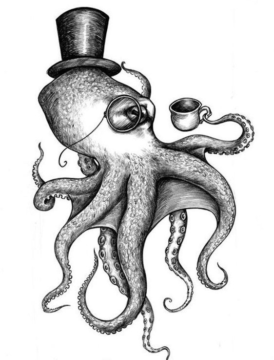

De vez en cuando, usualmente entre las 8 y las 10 de la noche, Mariano se transforma en un escurridizo pulpo de gran tamaño con una larga barba blanca, lo que en Galicia llamamos un pulpo de raza loba. Por un lado, Mariano está agradecido por no sufrir
la típica licantropía de los gallegos.
En vez de preocuparse por comerse accidentalmente al paisano de al lado, se preocupa de no terminar en la pota los martes en los que hay feria del pulpo en el pueblo. Tras varias ocasiones en las que se ha despertado aturdido y desnudo
entre las rocas de la playa, ha decidido cerrar las puertas de su casa con llave y llenar la bañera con mejillones de la Ría para estar entretenido cuando se transforma. Pero Mariano está preocupado y quiere solucionar su problema. Sospecha
que hay algo que dispara la transformación, ya que no sucede todos los días.
Como es un poco nerd, decide enfrentarse al problema de manera científica, registrando en un diario lo que hace cada día y anotando si se transformó o no con unos de sus ocho brazos. Vamos a ayudarle a construir un programa mediante
el cual pueda recoger la información que necesita en una estructura de datos, y luego aplicar un algoritmo para averiguar cuál o cuáles de las cosas que hace (caminar, ver la vuelta, beber vino, etc.) produce que se transforme en pulpo.